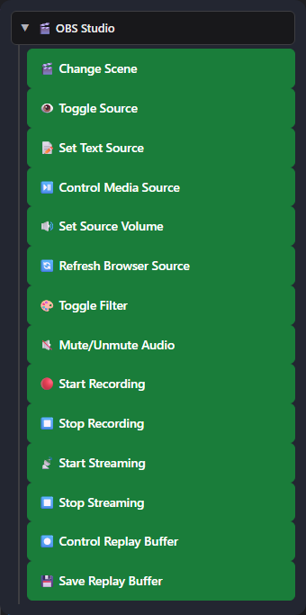
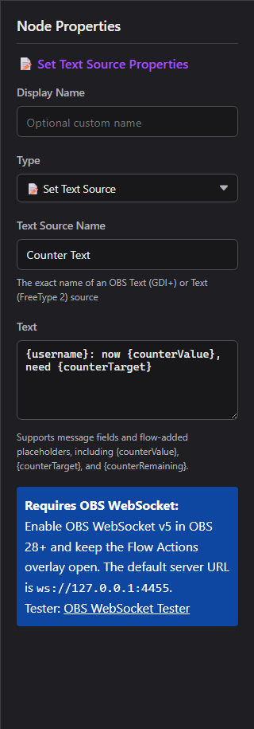

1. Connect Flow Actions to OBS
OBS WebSocket v5 is built into OBS 28 and newer. Social Stream Ninja uses it for full OBS control and media events.
- In OBS, open Tools → WebSocket Server Settings.
- Enable the WebSocket server. Keep the default port
4455; set a password if wanted. - In Social Stream Ninja, open the Flow Actions section and set the OBS WebSocket URL and optional password.
- Copy the Flow Actions URL and keep it open. An OBS Browser Source is recommended for overlay/audio actions.
- Kasutage OBS WebSocket Tester to confirm the connection before building a flow.
https://socialstream.ninja/actions.html?session=YOUR_SESSION&obsws=ws://127.0.0.1:4455Lisa
&obspw=YOUR_PASSWORD only when OBS requires authentication. Add &obsdebug=1 to show a small connection-status badge while diagnosing problems.
Two OBS connection modes
| Režiim | What it supports | Requirement |
|---|---|---|
| OBS WebSocket v5 | Every trigger and action in this guide. | OBS 28+, WebSocket server enabled, Flow Actions page open. |
| OBS Browser Source API | Fallback for scene changes, start/stop streaming, start/stop recording, and saving replay buffer. | Flow Actions loaded inside OBS with Advanced Access Level. Source, filter, text, volume, media, refresh, and media-ended features still require WebSocket. |
2. Add OBS nodes to a flow
- Avage Event Flow Editor and create or edit a flow.
- Drag a trigger onto the canvas.
- Expand OBS Studio in the Actions list and drag in the OBS action you need.
- Connect the trigger to the action, configure the exact OBS scene/source names, save, and enable the flow.

3. OBS triggers
These start a flow when OBS reports a matching event. They arrive as type: "obs"; OBS-specific details are under meta.
| Trigger | When it fires | Useful data |
|---|---|---|
| OBS Stream Started | Streaming reaches the started state. | meta.outputState, meta.outputActive |
| OBS Stream Stopped | Streaming reaches the stopped state. | meta.outputState, meta.outputActive |
| OBS Recording Started | Recording starts. | meta.outputState |
| OBS Recording Stopped | Recording stops. | meta.outputState |
| OBS Scene Changed | The active program scene changes. | meta.sceneName |
| OBS Media Ended WebSocket | A media input finishes playback. Optionally filter by exact Media Source Name. | meta.inputName, meta.inputUuid |
| OBS Replay Buffer Saved | OBS finishes saving a replay. | meta.savedReplayPath |
4. OBS actions
| Tegevus | Configuration and behavior | Connection |
|---|---|---|
| Change Scene | Switches the active program scene by exact scene name. | WebSocket or Browser Source API fallback |
| Toggle Source | Show, hide, or toggle a scene item. Scene and Group are optional targeting fields. | WebSocket |
| Set Text Source | Updates Text (GDI+) or Text (FreeType 2), with template placeholders. | WebSocket |
| Control Media Source | Play/resume, pause, restart, stop, next, or previous. | WebSocket |
| Set Source Volume | Sets an input from -100 juurde +26 dB. | WebSocket |
| Refresh Browser Source | Reloads a Browser Source without cache. | WebSocket |
| Toggle Filter | Enable, disable, or toggle a named source filter. | WebSocket |
| Mute/Unmute Audio | Mute, unmute, or toggle an input. | WebSocket |
| Alustage salvestamist | Starts OBS recording. | WebSocket or Browser Source API fallback |
| Stop Recording | Stops OBS recording. | WebSocket or Browser Source API fallback |
| Alusta voogesitust | Starts the configured OBS stream output. | WebSocket or Browser Source API fallback |
| Stop Streaming | Stops the OBS stream output. | WebSocket or Browser Source API fallback |
| Control Replay Buffer | Start, stop, or toggle the replay buffer. | WebSocket |
| Save Replay Buffer | Saves the currently running replay buffer. | WebSocket or Browser Source API fallback |
Set Text Source and flow variables
The text field supports normal message placeholders such as {username}, {message}, {source}, ja {donation}, plus values added by earlier flow nodes such as {counterValue}, {counterTarget}, ja {counterRemaining}.
{username}: now {counterValue}, need {counterTarget}
Media Source controls
Play / Pause
Play resumes paused media. Pause holds its current position.
Restart / Stop
Restart starts from the beginning. Stop ends playback and resets the input.
Next / Previous
Moves through playlist-capable inputs, such as VLC Video Source. A single-file Media Source may ignore these actions.
Volume, mute, and filters
Set Source Volume uses dB, matching the OBS mixer scale: 0 dB is unchanged gain, negative values are quieter, and -100 dB is effectively silent. Mute is a separate state. Toggle Filter changes only the enabled state of an existing filter; it does not edit filter settings.
Replay Buffer
First enable Replay Buffer in OBS Settings → Output. Kasutage Control Replay Buffer to start/stop it, then Save Replay Buffer to write the recent buffered segment to disk.
5. Useful recipes
Hourly message while OBS is live
In the Event Flow editor, choose Start with a template → Intermediate → Hourly message while OBS is live. It starts disabled and contains three branches in one flow:
- OBS Stream Started → Set Gate State: ON
- Time Interval (3600 seconds) → ON/OFF Switch → Send Message
- OBS Stream Stopped → Set Gate State: OFF
Both Set Gate State actions already target the same switch, which defaults to OFF. Edit Send Message to choose your chat platform (the example uses Twitch) and message. Choose a platform or All Platforms; Reply to Source cannot reply to an OBS event or timer tick.
Connect Flow Actions to OBS, keep Social Stream and the destination chat connected, then save and enable the flow before starting your stream. The switch waits for an OBS start event; loading it during an existing stream does not turn it ON. Restarting Social Stream also resets the switch to OFF.
Timing: the interval runs on its own schedule, so the first reminder may arrive sooner than one hour after streaming starts. Later reminders repeat every hour while the switch is ON. Change the Time Interval value for a different frequency; it is measured in seconds.
Counter text in OBS
Place Set Text Source after the counter/check path and use:
{username}: now {counterValue}, need {counterTarget}
Run something after a video
OBS Media Ended (filter to Intro Video) → Change Scene juurde Main.
Chat-controlled media restart
Message Equals !replayintro → permission condition → Control Media Source: Restart.
Refresh an alert page
Message Equals !refreshalerts → moderator condition → Refresh Browser Source.
Duck music for an alert
Set Source Volume juurde -24 dB → alert action → Delay → restore to 0 dB.
Replay workflow
OBS Stream Started → Control Replay Buffer: Start; a separate trusted command runs Save Replay Buffer.
6. Other built-in OBS controls
Social Stream Ninja also has older OBS Browser Source controls in the Streaming Chat dock. These do not use the Flow Actions WebSocket bridge.
| Valik | Mida see teeb | Requirement |
|---|---|---|
| Current OBS scene indicator | Shows the active scene in the Streaming Chat dock. | Dock loaded inside OBS with read permission. |
| Guests can use !cycle | Cycles to the next OBS scene, rate-limited to once per 10 seconds. | Enable the popup option; dock loaded inside OBS with Advanced access. |
| Privileged users can use !start / !stop | Starts or stops streaming from trusted chat users. | Enable the popup option; dock loaded inside OBS with Full/Advanced control permission. |
| Remote OBS control panel | Displays scenes and can switch scenes or toggle streaming/recording when the target OBS dock grants the required control level. | Streaming Chat dock paired to a dock running inside OBS. |
| OBS WebSocket Tester | Checks version, connection, scenes, and individual requests before using Event Flow. | Open tester |
7. Troubleshooting
| Probleem | Check |
|---|---|
| Nothing happens | Flow is saved and enabled; Flow Actions is open; both use the same session ID. |
| OBS will not connect | WebSocket server is enabled, URL is ws://127.0.0.1:4455, and password matches. Port 4444 is the obsolete v4 default. |
| Scene/source/filter is not found | Copy the exact OBS name. For visibility, set Scene or Group when the item is nested or outside the current scene. |
| Text does not change | Use Text (GDI+) or Text (FreeType 2), confirm the input name, and disable Read from file. |
| Media Ended never fires | Use OBS WebSocket v5 and a real media input. Looping media does not reach an ended state. |
| Next/Previous does nothing | Use a playlist-capable source such as VLC Video Source. |
| Replay save fails | Enable Replay Buffer in OBS Output settings and start it before saving. |
| Actions stop when a scene changes | Disable Shutdown source when not visible on the Flow Actions Browser Source, or keep the page open elsewhere. |
GetVersion → confirm scenes/inputs → test the individual request → test the full Event Flow.